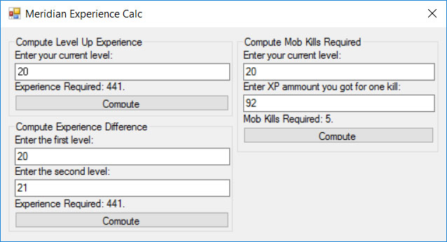

ExperienceCalc is an advanced utility which allows to calculate and compute anything which belongs to experience points in Meridian 59 on Server 105. This utility is originaly created and maintained by gitknoob. Without a doubt, this is a good and only tool to manage character's experience points as well with ability to create and spread hitpoint building tasks.
